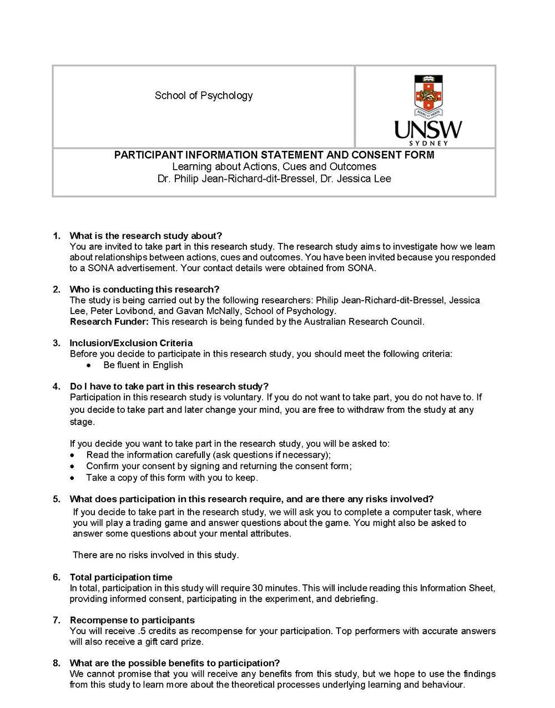
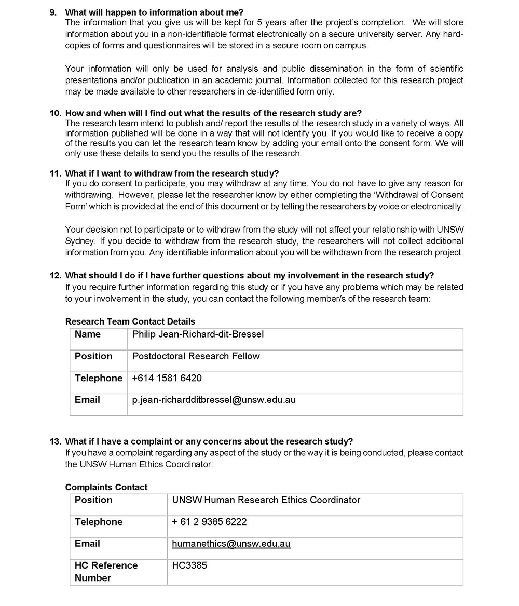
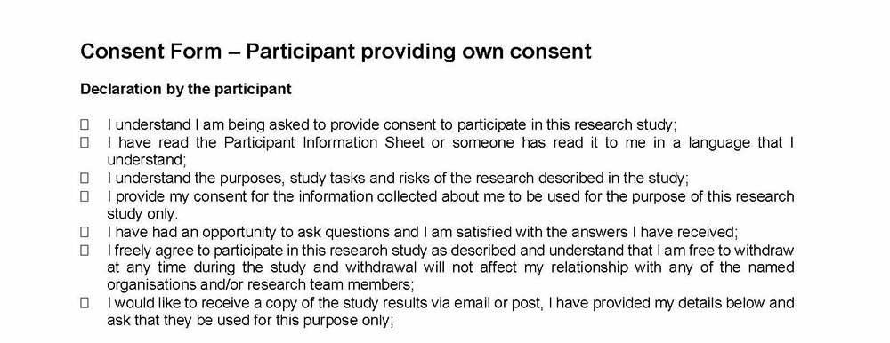

<!DOCTYPE html>
<html>
  <head>
  	<title>Planets and Pirates</title>
  	<script src="jspsych-6.1.0/jspsych.js"></script>
  	<link href="jspsych-6.1.0/css/jspsych.css" rel="stylesheet" type="text/css"></link>
    <script src="jspsych-6.1.0/plugins/jspsych-fullscreen.js"></script>
  	<script src="jspsych-6.1.0/plugins/jspsych-html-button-response.js"></script>
    <script src="jspsych-6.1.0/plugins/jspsych-survey-html-form.js"></script>
    <script src="jspsych-6.1.0/plugins/jspsych-instructions.js"></script>
    <script src="jspsych-6.1.0/plugins/jspsych-survey-multi-choice.js"></script>
  	<script src="jspsych-6.1.0/plugins/jspsych-image-keyboard-response.js"></script>
  	<script src="jspsych-6.1.0/plugins/planet-response.js"></script>
    <script src="jspsych-6.1.0/plugins/jspsych-valence-check-3.js"></script>
    <script src="jspsych-6.1.0/plugins/jspsych-valence-check-6.js"></script>
    <script src="jspsych-6.1.0/plugins/jspsych-inference-check-1.js"></script>
    <script src="jspsych-6.1.0/plugins/jspsych-inference-check-4.js"></script>
    <script src="jspsych-6.1.0/plugins/jspsych-survey-likert.js"></script>
    <script src="jspsych-6.1.0/plugins/jspsych-survey-text.js"></script>
    <script src="jatos.js"></script>
  </head>
  <body>

  </body>
  <script>

  //----------------------------------------------------------------------------
  /* experiment parameters */

  var groups = ["0", "1.5", "3"];
  let group = "" + jsPsych.randomization.sampleWithReplacement(groups, 1) + "";
  var samples = ["MTurk", "SONA", "SONA-online"];
  let sample = samples[2];
  var completion_code = (Math.floor(Math.random() * 99999) * 397).toString();

  // randomise position of punished planet, left-right assignment of planets and ships
  var pun_planet_sides = [0, 1]; // position of punished planet, 0 = left (planet A), 1 = right (planet B)
  let pun_planet_side = "" + jsPsych.randomization.sampleWithReplacement(pun_planet_sides, 1) + "";

  let stim_list = jsPsych.randomization.repeat(['img/bluep.png','img/orangep.png'], 1);
  let ship_list = jsPsych.randomization.repeat(['img/ship1.png','img/ship2.png'], 1);

  // contingency instructions screen
  var pun_planet = stim_list[pun_planet_side].substr(4).slice(0,-5);
  var unpun_planet = stim_list[1-pun_planet_side].substr(4).slice(0,-5);
  var pun_ship = ship_list[pun_planet_side].substr(8).slice(0,-4);
  var unpun_ship = ship_list[1-pun_planet_side].substr(8).slice(0,-4);
  if (pun_planet_side === "0") { // left
    var planet_layout = ["left", "right"]; // punished, unpunished
  } else if (pun_planet_side === "1") { // right
    var planet_layout = ["right", "left"]; // punished, unpunished
  }

  // define global variables
	var block_number = 0;
	var trial_number = 0;
	var points = 0;
	var continuousResp = true;
	var nBlocks_p1 = 2;
	var nBlocks_p2 = 4;
  var block_duration = 180 * 1000; // in milliseconds (3 mins)
  var iti = 1000;
  var inf_stim_height = 80;
  var inf_slider_width = 500;
  var main_stim_height = 250;
  var feedback_duration = 2500;
  // manipulate delay between outcome and ship
  if (group === "0") {
    var rf_ship_delay = 0; 
  } else if (group === "1.5") {
    var rf_ship_delay = 1500; 
  } else if (group === "3") {
    var rf_ship_delay = 3000;
  }

	var nTrialspBlk = 5; //if continuousResp is true though, this doesn't matter
	if (continuousResp){
		var nTrialspBlk = 1;
	}

  var images = [
    'img/signal1.png','img/signal2.png','img/signal3.png','img/signal4.png',
    'img/ship1.png','img/ship2.png',
    'img/bluep.png','img/orangep.png',
    'img/cursor.png','img/cursordark.png', 'img/selectring.png',
    'img/win100.png', 'img/lose.png',
    'img/arrow.jpg', 'img/blank_lose.jpg', 'img/blank_arrow.jpg'
  ];

  //----------------------------------------------------------------------------
  /* instructions text */

  consent_text = [
    '<p>Before you begin, please read the information sheet carefully (you can download the pdf <a href="https://jessicaleephd.files.wordpress.com/2020/07/pis_sona_3385.pdf" target="_blank">here</a>)</p>' +
    '<br>' +
    '<p align="center"><b>PARTICIPANT CONSENT</b></p>' +
    '<center></center>' +
    '<center></center>' +
    '<center></center>' +
    'By continuing, you are making a decision whether or not to participate. <br>  Clicking the button below indicates that, having read the information provided on the participant information sheet, you consent to the above.' +
    '<br></p>'
  ];

  demo_text = [
    '<p> Gender: ' +
    '<input type="radio" name="gender" value="male" required/> Male &nbsp; ' +
    '<input type="radio" name="gender" value="female" required/> Female &nbsp;' +
    '<input type="radio" name="gender" value="other" required/> Other<br>' + '<br>' +
    '<p> Age: <input name="age" type="text" required/> </p>' + '<br>' +
    '<p> Native language: <input name="language" type="text" required/> </p>' + '<br>'
  ];

  if (sample === "MTurk") {
    var MTurk_insert = [
      '<p>If anything goes wrong during the experiment, please take a screenshot and notify the requester. Do <b>not</b> press the BACK button or quit out of the program. This will make it hard for you to get paid.</p>' +
      '<p>If you complete the task, you will get your payment no matter what. Please take your time and think about your predictions and judgements seriously. </p>'
    ]
  } else {
    var MTurk_insert = '';
  }

  var ins = {};

  ins.pretrain1 = [
    '<p>WELCOME TO THE EXPERIMENT! </p>' +
    '<p>Throughout the experiment, please read all instructions <b>carefully</b> and click on the buttons to go forward or back. You may need to scroll down on some pages. </p>' +
    MTurk_insert +
    '<p>Please <b>do not</b> hit refresh or the back button on your browser as you can only do the experiment ONCE.</p>' +
    '<p>Please complete the experiment in ONE sitting in FULL SCREEN mode.</p>'
  ];

  ins.pretrain2 = [
    '<p>In this experiment you will be playing a game over 6 blocks. </p>' +
    '<p>In this game, you are an intergalactic trader in space. You will be situated between two planets that you can trade with. You can send a signal to each planet by clicking on them. Sometimes locals on these planets will receive the signal and be willing to trade. Each successful trade will give you points. </p>' +
    '<p>Your goal is to have as many points as possible. </p>'
    // '<p><b>Note:</b> Whatever you earn in-game will be converted into real money for you at the end of the experiment. The more you earn in-game, the more you make in real life. You can earn more points by trading with both planets. </p>'
  ];

  ins.pretrain3 = [
    '<p>You can click on each of the planets as many times as you like. Just remember, the aim is to get as many points as possible! </p>' +
    '<p>There are multiple blocks in this experiment. Between each block we will ask you some questions about each of the game elements. </p>' +
    '<p>There are monetary prizes for participants that have high scores and accurate answers, so do your best! </p>'
  ];

  // instruction check
  var Q0_text = "<b>Question 1:</b> The aim of the task is to:";
  var Q0_answers = ["Get as many points as possible", "Battle the aliens on the planets"];
  var Q1_text = "<b>Question 2:</b> Clicking on each planet will: ";
  var Q1_answers = ["Make the planet disappear", "Sometimes result in a successful trade, earning me points"];
  var Q2_text = "<b>Question 3:</b> There will be multiple blocks in this experiment, with questions in between each block. ";
  var Q2_answers = ["FALSE", "TRUE"];
  var Q3_text = "<b>Question 4:</b> The top performers with the most points at the end of the task will receive: ";
  var Q3_answers = ["An additional monetary prize", "Extra course credit"];
  var correctstring = '{"Q0":"' + Q0_answers[0] +
    '","Q1":"' + Q1_answers[1] +
    '","Q2":"' + Q2_answers[1] +
    '","Q3":"' + Q3_answers[0] +
    '"}';

  // contingency check
  var Q0_cont_text = "<b>Question 1:</b> Which (pirate) ship leads to attacks?";
  var Q0_cont_answers = ['Ship Type 1', 'Ship Type 2'];
  var Q1_cont_text = "<b>Question 2:</b> Which planet has been attracting pirate ships?";
  var Q1_cont_answers = ['The ' + pun_planet + ' planet (' + planet_layout[0] + ' side)', 'The ' + unpun_planet + ' planet (' + planet_layout[1] + ' side)'];
  // var Q2_cont_text = "<b>Question 3:</b> Which ship has the " + pun_planet + "  planet (" + planet_layout[0] + " side) been attracting?";
  // var Q2_cont_answers = ["Ship Type 1", "Ship Type 2"];
  // var Q3_cont_text = "<b>Question 4:</b> Which ship has the " + unpun_planet + "  planet (" + planet_layout[0] + " side) been attracting?";
  // var Q3_cont_answers = ["Ship Type 1", "Ship Type 2"];
  var correctstring_cont = '{"Q0":"' + Q0_cont_answers[pun_ship-1] +
    '","Q1":"' + Q1_cont_answers[0] +
    // '","Q2":"' + Q1_cont_answers[parseInt(pun_ship-1)] +
    // '","Q3":"' + Q2_cont_answers[parseInt(unpun_ship-1)] +
    '"}';

  ins.phase2 = [
    '<p>There have been reports of local pirates stealing from trading ships. Watch out! </p>' +
    // '<p>In the next few blocks, trading with a planet might result in the arrival of a pirate ship. </p>' +
    '<p>Your ship has a shield that can keep these pirates from stealing from you, but the shield will not always be available. If available, you can activate the shield by pressing the ACTIVATE button. </p>' +
    '<p>Remember, your goal is still to have as many points as possible! </p>'
  ];

  ins.instruct = [
    '<p>Local intel has determined where the pirates are coming from!</p>' +
    '<br>' +
    '<p>Your signals to the ' + pun_planet + ' planet (' + planet_layout[0] + ' side) have been attracting pirate ships (Ship: Type ' + pun_ship + '), that have been stealing your points! </p>' +
    '<p>' +
    '' + 
    '' +
    '' + 
    '</p>' + 
    '<br><br><br>' +
    '<p>Your signals to the ' + unpun_planet + ' planet (' + planet_layout[1] + ' side) have only been attracting friendly ships (Ship: Type ' + unpun_ship + '). </p>' +
    '<p>' +
    '' + 
    '' + 
    '' + 
    '</p>'
  ];

  ins.debrief = [
    '<p>Please confirm that you have read the debriefing questions below: </p>' +
    '<p><b><i>What are the research questions?</i></b> Our behaviour changes in response to experienced rewards and losses. This study asks how behaviour and accompanying beliefs change when these outcomes have varying degrees of relationship to our behaviour. </p>' +

    '<p><b>	<i>How does this study extend on previous research on this topic?</i></b> Existing research suggests that stronger relationships between behaviours and outcomes will influence behaviour more. For example, behaviours that earn immediate and regular rewards are more likely to be reinforced than behaviours with a weaker relationship to rewards. We extend this by examining how dependent these changes are on beliefs and personality traits. </p>' +

    '<p><b><i>What are some potential real-world implications of this research?</i></b> We learn about our environments through experience. Understanding how beliefs develop with this experience to change behaviour can help us better understand and predict adaptive/maladaptive decision-making. A potential outcome of this understanding is the development of more effective strategies to improve learning and decision-making. </p>' +

    '<p><b><i>Describe a potential issue or limitation of the study (e.g., ethical, design etc.), or opportunities for future work that extends this study.</i></b> Participants might have prior experience or beliefs that would affect performance in the task. We have attempted to control for this by using a cover-story to help participants understand and engage in the task. Future studies could vary this cover-story to assess how this affects learning and decision-making in the task. </p>' +

    '<p><b><i>Describe the study methodology (e.g., design, dependent/independent variables, stimulus presentation).</i></b> Participants are given the opportunity to click on “planets” to earn point rewards. In addition to this, “ships” that may or may not result in point loss are presented. The key independent variable is the programmed strength of the relationship between particular actions and point outcomes (weak vs. strong relationship). The key dependent variables are clicking behaviour, valuations of task elements, and inferred relationships between task elements. Personality traits are also assessed to observe how these relate to behaviour and beliefs. </p>' +

    '<p><b><i>Further reading: </i></b> Lovibond, P.F., & Shanks, D.R. (2002). The role of awareness in Pavlovian conditioning: Empirical evidence and theoretical implications. Journal of Experimental Psychology: Animal Behavior Processes, 28, 3. </p>'
  ];

  //----------------------------------------------------------------------------
  /* inference and valence checks */

  // valence check
  var valence_q = 'How do you feel about each of these game elements: ' +
  '<br><br>';

  var val_img_p1 = [
    {
      stimulus: 'img/win100.png',
      text: "Winning $100"
    },
    {
      stimulus: stim_list[0],
      text: "Planet A (left)"
    },
    {
      stimulus: stim_list[1],
      text: "Planet B (right)"
    }
  ];

  var val_img_p2 = [
    {
      stimulus: 'img/win100.png',
      text: "Winning $100"
    },
    {
      stimulus: stim_list[0],
      text: "Planet A (left)"
    },
    {
      stimulus: stim_list[1],
      text: "Planet B (right)"
    },
    {
      stimulus: 'img/ship1.png',
      text: "Ship 1"
    },
    {
      stimulus: 'img/ship2.png',
      text: "Ship 2"
    },
    {
      stimulus: 'img/lose.png',
      text: "Losing $"
    }
  ];

  var valence_labels = [
    'Very <br>negative',
    'Slightly <br>negative',
    'Neutral',
    'Slightly <br>positive',
    'Very <br>positive'
  ];

  // inference check prompt
  var inference_prompt = [
    'Please answer the following questions with respect to <b>Planet A</b> (left planet):',
    'Please answer the following questions with respect to <b>Planet B</b> (right planet):',
    'Please answer the following questions with respect to <b>Ship 1</b>:',
    'Please answer the following questions with respect to <b>Ship 2</b>:',
  ];

  // contingency question
  var contingency_q = [
    'How OFTEN did interacting with <b>planet A</b> lead to the above outcome?',
    'How OFTEN did interacting with <b>planet B</b> lead to the above outcome?',
    'How OFTEN did interacting with <b>Ship 1</b> lead to the above outcome?',
    'How OFTEN did interacting with <b>Ship 2</b> lead to the above outcome?',
  ];

  // confidence question
  var confidence_q = [
    'How CONFIDENT are you about this estimate?'
  ];

  // phase 1, planet A
  var inf_img_p1_A = [
    {
      stimulus: 'img/win100.png',
      text: "Winning $100"
    }
  ];

  // phase 1, planet B
  var inf_img_p1_B = [
    {
      stimulus: 'img/win100.png',
      text: "Winning $100"
    }
  ];

  // phase 2, planet A
  var inf_img_p2_A = [
    {
      stimulus: 'img/win100.png',
      text: "Winning $100"
    },
    {
      stimulus: 'img/ship1.png',
      text: "Ship 1"
    },
    {
      stimulus: 'img/ship2.png',
      text: "Ship 2"
    },
    {
      stimulus: 'img/lose.png',
      text: "Losing $"
    }
  ];

  // phase 2, planet B
  var inf_img_p2_B = [
    {
      stimulus: 'img/win100.png',
      text: "Winning $100"
    },
    {
      stimulus: 'img/ship1.png',
      text: "Ship 1"
    },
    {
      stimulus: 'img/ship2.png',
      text: "Ship 2"
    },
    {
      stimulus: 'img/lose.png',
      text: "Losing $"
    }
  ];

  var contingency_labels = [
    '<p>' + 'Never' + '<br>(0%)</p>',
    '<p>' + 'Sometimes' + '</p>',
    '<p>' + 'Every time' + '<br>(100%)</p>'
  ];

  var confidence_labels = [
    '<p>' + 'Very <br>uncertain' + '</p>',
    '<p>' + 'Somewhat <br>uncertain' + '</p>',
    '<p>' + 'Somewhat <br>confident' + '</p>',
    '<p>' + 'Very <br>confident' + '</p>'
  ];

  // open-ended q
  var open_q = 'What is the best approach to trading in this game? Did your strategy change between blocks? Please provide as much detail as possible. ';

  //----------------------------------------------------------------------------
  /* individual difference questionnaires */

  // DASS
  var dass = [];
  dass.prompt = 'Please rate how much each statement applied to you <u>over the past week</u>. There are no right or wrong answers.';
  dass.items = [
    'I was aware of dryness of my mouth',
    'I couldn’t seem to experience any positive feeling at all',
    'I experienced breathing difficulty (eg. excessively rapid breathing, breathlessness in the absence of physical exertion)',
    'I found it difficult to work up the initiative to do things',
    'I experienced trembling (eg. in the hands)',
    'I was worried about situations in which I might panic and make a fool of myself',
    'I felt that I had nothing to look forward to',
    'I felt down-hearted and blue',
    'I felt I was close to panic',
    'I was unable to become enthusiastic about anything',
    'I felt I wasn’t worth much as a person',
    'I was aware of the action of my heart in the absence of physical exertion (eg. sense of heart rate increase, heart missing a beat)',
    'I felt scared without any good reason',
    'I felt that life was meaningless'
  ];
  dass.labels = ['0<br>(never)', '1<br>(sometimes)', '2<br>(often)', '3<br> (almost always)'];

  // Brief BIS-11
  var bis = [];
  bis.prompt = 'Please rate how well the following statements describe <u>how you generally are</u>:'
  bis.items = [
    'I plan tasks carefully.',
    'I do things without thinking.',
    'I don’t pay attention.',
    'I am self-controlled.',
    'I concentrate easily.',
    'I am a careful thinker.',
    'I say things without thinking.',
    'I act on the spur of the moment.'
  ];
  bis.labels = ['0<br>(rarely)', '1<br>(sometimes)', '2<br>(often)', '3<br> (almost always)'];

  // Attribution of Responsibility
  var aor = [];
  aor.prompt = 'Please rate how much you agree with the following statements:'
  aor.items = [
    'My misfortunes have resulted mainly from the mistakes I’ve made.',
    'In my case getting what I want has had little or nothing to do with luck.',
    'When people have not liked me I have usually felt there was something wrong with me.',
    'I have found that success in anything is built on hard work.',
    'When relationships with others have gone wrong I have usually felt that I was to blame.',
    'Success seems to me to have been largely a matter of having been in the right place at the right time.',
    'When I have been criticized it has usually been deserved.',
    'Select the left-most option, strongly disagree, for this question.',
    'Most of my successes have happened without my really trying.',
    'For most of my misfortunes and disappointments I have nobody to blame but myself.',
    'It will be largely a matter of luck if I succeed in life.',
    'I usually blame myself when things go wrong.',
    'If I get what I want in life it will only be through hard work.'
  ];
  aor.labels = ['strongly<br>disagree', 'disagree', 'neither agree <br>nor disagree', 'agree', 'strongly<br>agree'];

  // BIS/BAS
  var bisbas = [];
  bisbas.prompt = 'Please rate how well the following statements describe <u>how you generally are</u>:'
  bisbas.items = [
    'I go out of my way to get things I want.',
    'When I’m doing well at something, I love to keep at it.',
    'When I get something I want, I feel excited and energized.',
    'Criticism or scolding hurts me quite a bit.',
    'When I want something I usually go all-out to get it.',
    'I will often do things for no other reason than that they might be fun.',
    'If I see a chance to get something I want, I move on it right away.',
    'I feel pretty worried or upset when I think or know somebody is angry at me.',
    'I often act on the spur of the moment.',
    'Select three, very true for me, for this question.',
    'If I think something unpleasant is going to happen I usually get pretty worked up.',
    'I crave excitement and new sensations.',
    'It would excite me to win a contest.',
    'I worry about making mistakes.'
  ];
  bisbas.labels = ['0<br>(not true at all for me)', '1', '2', '3<br>(very true for me)'];

  // Mini IPIP
  var ipip = [];
  ipip.prompt = 'Please rate how well the following statements describe <u>how you generally are</u>, relative to other people you know:'
  ipip.items = [
    'I am the life of the party.',
    'I sympathize with others’ feelings',
    'I get chores done right away.',
    'I have frequent mood swings.',
    'I have a vivid imagination.',
    'I don’t talk a lot.',
    'I am not interested in other people’s problems.',
    'I often forget to put things back in their proper place.',
    'I am relaxed most of the time.',
    'I am not interested in abstract ideas.',
    'I talk to a lot of different people at parties.',
    'I feel others’ emotions.',
    'I like order.',
    'I get upset easily.',
    'I have difficulty understanding abstract ideas.',
    'I keep in the background.',
    'I am not really interested in others.',
    'I make a mess of things.',
    'I seldom feel blue.',
    'I do not have a good imagination.'
  ];
  ipip.labels = ['very<br>inaccurate', 'moderately<br>inaccurate', 'neither inaccurate <br>nor accurate', 'moderately<br>accurate', 'very<br>accurate'];


//----------------------------------------------------------------------------
  /* experiment blocks */

	// initialise timeline
  var introloop = [];
  var timeline = [];
  var block6loop = []

/*
  // force full screen
  timeline.push(
    {
      type: 'fullscreen',
      fullscreen_mode: true
    }
  );

  // info statement and consent
  var consent_block = {
		type: 'html-button-response',
		stimulus: consent_text,
		choices: ['I consent to participate'],
    data: {
      phase: 'consent'
    }
	}
	timeline.push(consent_block);

  // demographics
  var demographics_block = {
    type: 'survey-html-form',
    preamble: '<p><b>Please fill in your demographic details</b></p>',
    html: demo_text,
    data: {
      phase: 'demographics'
    }
  };
  timeline.push(demographics_block);
 */
  //----------------------------------------------------------------------------
  /* introloop:
  - includes instructions, instruction check, and splash screen
  - loops continuously until participant gets questions correct */

  // define general instructions
  var gen_ins_block = {
    type: 'instructions',
    pages: [
      ins.pretrain1,
      ins.pretrain2,
      ins.pretrain3
      ],
    allow_keys: false,
    show_clickable_nav: true,
    post_trial_gap: iti,
    data: {
      phase: 'instructions'
    }
  };
  //introloop.push(gen_ins_block);

  // define instruction check block
  var instructioncorrect = false;
  var instruction_check = {
    type: "survey-multi-choice",
    preamble: ["<p align='center'><b>Check your knowledge before you begin!</b></p>"],
    questions: [
      {prompt: Q0_text, options: Q0_answers, required: true},
      {prompt: Q1_text, options: Q1_answers, required: true},
      {prompt: Q2_text, options: Q2_answers, required: true},
      {prompt: Q3_text, options: Q3_answers, required: true}
        ],
    on_finish: function(data) {
      if( data.responses == correctstring) {
        action = false;
        instructioncorrect = true;
      }
    }
  }
	//introloop.push(instruction_check);

  // define a page for the incorrect response
  var showsplash = true;
  var splash_screen = {
    type: 'html-button-response',
    choices: ['Click here to read the instructions again'],
    stimulus: '<center>Unfortunately, at least one of your answers was incorrect.</center>'
  }

  // push it to a conditional node that only shows it if the response was wrong
  var conditional_splash = {
    timeline: [splash_screen],
    conditional_function: function(data) {
          return !instructioncorrect // skip if correct
      }
  }
	//introloop.push(conditional_splash);

  // add all to loop node and push to timeline
  var loop_node = {
    timeline: introloop,
    loop_function: function(data) {
          //var action = true;
          return !instructioncorrect // stop looping if correct
      }
  }
	//timeline.push(loop_node);

  // success trial
  var successtrial = {
    type: 'html-button-response',
    post_trial_gap: 0,
    choices: ['Click here to start Phase 1'],
    stimulus: '<center>Well done!</center>'
  };
	//timeline.push(successtrial);

  //----------------------------------------------------------------------------
  // ----- Phase 1 -----

	
	// define task blocks with no ships
	var planet_noship = {
		type: 'planet-response',
		stimulus: stim_list,
		stimulus_select:'img/selectring.png',
		prompt: ['Planet A','Planet B'],
		ship_stimulus: ship_list,
		show_ship: false,
		ship_hostile_idx: pun_planet_side,
		block_duration: block_duration,
		reset_planet_wait: 1000,
		shield_charging_time: 3000,
		ship_attack_time: 6000,
		feedback_duration: feedback_duration,
		data: {
			phase: 'phase1',
			block_type: 'planet_noship',
			block_number: block_number,
			trial_number: trial_number
		},
		on_start: function(trial) {
			trial.data.points = points;
			trial.data.block_number = block_number;
			trial.data.trial_number = trial_number;
		},
		on_finish: function(data){
			points = data.points_total;
			trial_number = data.trial_number;
			trial_number++;
			// script for continuous response block
			if (continuousResp) {
				jsPsych.endCurrentTimeline();
				block_number = data.block_number;
				block_number++
				console.log('Block ' + block_number)
			} else {
				if (trial_number >= nTrialspBlk) {
					trial_number = 0
					block_number = data.block_number;
					block_number++
					console.log('Block ' + block_number)

				}
			}
		}
	}

	// loop over specified number of blocks
	for (var i=0; i<nBlocks_p1; i++) {
		var block_noship = {
			timeline: [planet_noship],
			repetitions: nTrialspBlk,
			data: {
				phase: 'phase1'
			}
		}
		//timeline.push(block_noship);

		// valence check p1
    var valence_p1 = {
      type: 'valence-check-3',
      prompt: valence_q,
      stimulus_1: val_img_p1[0].stimulus,
      stim_text_1: val_img_p1[0].text,
      stimulus_2: val_img_p1[1].stimulus,
      stim_text_2: val_img_p1[1].text,
      stimulus_3: val_img_p1[2].stimulus,
      stim_text_3: val_img_p1[2].text,
      labels: valence_labels,
      stimulus_height: inf_stim_height,
      slider_width: inf_slider_width,
      require_movement: false,
      data: {
        phase: 'val_check_1',
        block_number: i
      }
    };

    // inference check p1 (planet A)
    var infer_p1_A = {
      type: 'inference-check-1',
      main_stimulus: stim_list[0],
      main_stimulus_height: main_stim_height,
      prompt: inference_prompt[0],
      stimulus_1: inf_img_p1_A[0].stimulus,
      stim_text_1: inf_img_p1_A[0].text,
      slider_text_top: contingency_q[0],
      slider_text_bottom: confidence_q,
      labels_top: contingency_labels,
      labels_bottom: confidence_labels,
      stimulus_height: inf_stim_height,
      slider_width: inf_slider_width,
      require_movement: false,
      data: {
        phase: 'inf_check_1_A',
        block_number: i
      }
    };

    // inference check p1 (planet B)
    var infer_p1_B = {
      type: 'inference-check-1',
      main_stimulus: stim_list[1],
      main_stimulus_height: main_stim_height,
      prompt: inference_prompt[1],
      stimulus_1: inf_img_p1_B[0].stimulus,
      stim_text_1: inf_img_p1_B[0].text,
      slider_text_top: contingency_q[1],
      slider_text_bottom: confidence_q,
      labels_top: contingency_labels,
      labels_bottom: confidence_labels,
      stimulus_height: inf_stim_height,
      slider_width: inf_slider_width,
      require_movement: false,
      data: {
        phase: 'inf_check_1_B',
        block_number: i
      }
    };

//		timeline.push(valence_p1);
//		timeline.push(infer_p1_A);
//		timeline.push(infer_p1_B);
	}

	// ----- Phase 2 -----

	// define pre-phase 2 instructions
  var phase2_ins_block = {
    type: 'instructions',
    pages: [
      ins.phase2
      ],
    allow_keys: false,
    show_clickable_nav: true,
    post_trial_gap: iti,
    data: {
      phase: 'instructions'
    }
  };
//  timeline.push(phase2_ins_block);

	//Generate list of shield appearances
	// copy a planet with ship version from noship
	var planet_ship = Object.assign({},planet_noship); // note that nested objects might not be copied and simply referenced? Be careful when trying to edit nested objects. Will probably need to clone them separately.
	planet_ship.show_ship = true;
	planet_ship.data = Object.assign({},planet_noship.data)
	planet_ship.data.block_type = 'planet_ship';
	planet_ship.show_ship_delay = rf_ship_delay;
	planet_ship.data.phase = 'Phase2';
	
	// push specified number of blocks into timeline
	for (var i=0; i<nBlocks_p2; i++){

		if (i === nBlocks_p2-1) {
			
			// present correct contingencies
			var cont_instructions = {
				type: 'instructions',
				pages: [
					'<p>Local intel has determined where the pirates are coming from!<br>Click Next to view this intel.</p>',
					ins.instruct
				],
				allow_keys: false,
				show_clickable_nav: true,
				post_trial_gap: iti,
				data: {
					phase: 'instruct contingencies'
				}
			};
			block6loop.push(cont_instructions);

      // contingency knowledge quiz
      var contingenciescorrect = false;
      var contingencies_check = {
        type: "survey-multi-choice",
        preamble: [
          "<p align='center'><b>Check your knowledge before you continue.</b></p>" +
          '' +
          ''],
        questions: [
          {prompt: Q0_cont_text, options: Q0_cont_answers, required: true},
          {prompt: Q1_cont_text, options: Q1_cont_answers, required: true}
            ],
        on_finish: function(data) {
          if( data.responses == correctstring_cont) {
            action = false;
            contingenciescorrect = true;
          }
        },
        data: {
          phase: 'contingency quiz'
        }
      }
      block6loop.push(contingencies_check);

      // define a page for the incorrect response
      var showsplash = true;
      var block6splash_screen = {
        type: 'html-button-response',
        choices: ['Click here to read the intel again'],
        stimulus: '<center>Unfortunately, at least one of your answers was incorrect.</center>'
      }

      // push it to a conditional node that only shows it if the response was wrong
      var block6conditional_splash = {
        timeline: [block6splash_screen],
        conditional_function: function(data) {
              return !contingenciescorrect // skip if correct
          }
      }
      block6loop.push(block6conditional_splash);

      // add all to loop node and push to timeline
      var block6loop_node = {
        timeline: block6loop,
        loop_function: function(data) {
              return !contingenciescorrect // stop looping if correct
          }
      }
//			timeline.push(block6loop_node);
    }

		var block_ship = {
			timeline: [planet_ship],
			repetitions: nTrialspBlk
		}
		timeline.push(block_ship);

    // value check p2
    var valence_p2 = {
      type: 'valence-check-6',
      prompt: valence_q,
      stimulus_1: val_img_p2[0].stimulus,
      stim_text_1: val_img_p2[0].text,
      stimulus_2: val_img_p2[1].stimulus,
      stim_text_2: val_img_p2[1].text,
      stimulus_3: val_img_p2[2].stimulus,
      stim_text_3: val_img_p2[2].text,
      stimulus_4: val_img_p2[3].stimulus,
      stim_text_4: val_img_p2[3].text,
      stimulus_5: val_img_p2[4].stimulus,
      stim_text_5: val_img_p2[4].text,
      stimulus_6: val_img_p2[5].stimulus,
      stim_text_6: val_img_p2[5].text,
      labels: valence_labels,
      stimulus_height: inf_stim_height,
      slider_width: inf_slider_width,
      require_movement: false,
      data: {
        phase: 'val_check_2',
        block_number: i + nBlocks_p1
      }
    };

    // inference check p2 (planet A)
    var infer_p2_A = {
      type: 'inference-check-4',
      main_stimulus: stim_list[0],
      main_stimulus_height: main_stim_height,
      prompt: inference_prompt[0],
      stimulus_1: inf_img_p2_A[0].stimulus,
      stimulus_2: inf_img_p2_A[1].stimulus,
      stimulus_3: inf_img_p2_A[2].stimulus,
      stimulus_4: inf_img_p2_A[3].stimulus,
      stim_text_1: inf_img_p2_A[0].text,
      stim_text_2: inf_img_p2_A[1].text,
      stim_text_3: inf_img_p2_A[2].text,
      stim_text_4: inf_img_p2_A[3].text,
      slider_text_top: contingency_q[0],
      slider_text_bottom: confidence_q,
      labels_top: contingency_labels,
      labels_bottom: confidence_labels,
      stimulus_height: inf_stim_height,
      slider_width: inf_slider_width,
      require_movement: false,
      data: {
        phase: 'inf_check_2_A',
        block_number: i + nBlocks_p1
      }
    };

    // inference check p2 (planet B)
    var infer_p2_B = {
      type: 'inference-check-4',
      main_stimulus: stim_list[1],
      main_stimulus_height: main_stim_height,
      prompt: inference_prompt[1],
      stimulus_1: inf_img_p2_B[0].stimulus,
      stimulus_2: inf_img_p2_B[1].stimulus,
      stimulus_3: inf_img_p2_B[2].stimulus,
      stimulus_4: inf_img_p2_B[3].stimulus,
      stim_text_1: inf_img_p2_B[0].text,
      stim_text_2: inf_img_p2_B[1].text,
      stim_text_3: inf_img_p2_B[2].text,
      stim_text_4: inf_img_p2_B[3].text,
      slider_text_top: contingency_q[1],
      slider_text_bottom: confidence_q,
      labels_top: contingency_labels,
      labels_bottom: confidence_labels,
      stimulus_height: inf_stim_height,
      slider_width: inf_slider_width,
      require_movement: false,
      data: {
        phase: 'inf_check_2_B',
        block_number: i + nBlocks_p1
      }
    };

    // inference check p2 (ship 1)
    var infer_p2_ship1 = {
      type: 'inference-check-1',
      main_stimulus: 'img/ship1.png',
      main_stimulus_height: main_stim_height,
      prompt: inference_prompt[2],
      stimulus_1: 'img/lose.png',
      stim_text_1: 'Losing $',
      slider_text_top: contingency_q[2],
      slider_text_bottom: confidence_q,
      labels_top: contingency_labels,
      labels_bottom: confidence_labels,
      stimulus_height: inf_stim_height,
      slider_width: inf_slider_width,
      require_movement: false,
      data: {
        phase: 'inf_check_2_ship1',
        block_number: i + nBlocks_p1
      }
    };

    // inference check p2 (ship 2)
    var infer_p2_ship2 = {
      type: 'inference-check-1',
      main_stimulus: 'img/ship2.png',
      main_stimulus_height: main_stim_height,
      prompt: inference_prompt[3],
      stimulus_1: 'img/lose.png',
      stim_text_1: 'Losing $',
      slider_text_top: contingency_q[3],
      slider_text_bottom: confidence_q,
      labels_top: contingency_labels,
      labels_bottom: confidence_labels,
      stimulus_height: inf_stim_height,
      slider_width: inf_slider_width,
      require_movement: false,
      data: {
        phase: 'inf_check_2_ship2',
        block_number: i + nBlocks_p1
      }
    };

		/*timeline.push(valence_p2);
		timeline.push(infer_p2_A);
		timeline.push(infer_p2_B);
		timeline.push(infer_p2_ship1);
		timeline.push(infer_p2_ship2);*/
	}

  // ----- questionnaires -----

  // DASS-21
  var dass_block = {
  type: 'survey-likert',
  preamble: dass.prompt,
  questions: [
    {prompt: dass.items[0], name: 'item1', labels: dass.labels, required: true},
    {prompt: dass.items[1], name: 'item2', labels: dass.labels, required: true},
    {prompt: dass.items[2], name: 'item3', labels: dass.labels, required: true},
    {prompt: dass.items[3], name: 'item4', labels: dass.labels, required: true},
    {prompt: dass.items[4], name: 'item5', labels: dass.labels, required: true},
    {prompt: dass.items[5], name: 'item6', labels: dass.labels, required: true},
    {prompt: dass.items[6], name: 'item7', labels: dass.labels, required: true},
    {prompt: dass.items[7], name: 'item8', labels: dass.labels, required: true},
    {prompt: dass.items[8], name: 'item9', labels: dass.labels, required: true},
    {prompt: dass.items[9], name: 'item10', labels: dass.labels, required: true},
    {prompt: dass.items[10], name: 'item11', labels: dass.labels, required: true},
    {prompt: dass.items[11], name: 'item12', labels: dass.labels, required: true},
    {prompt: dass.items[12], name: 'item13', labels: dass.labels, required: true},
    {prompt: dass.items[13], name: 'item14', labels: dass.labels, required: true}
    ],
    scale_width: inf_slider_width,
    post_trial_gap: iti,
    data: {
      phase: 'ques_dass'
    }
  };
  timeline.push(dass_block);

  // BIS-11
  var bis_block = {
  type: 'survey-likert',
  preamble: bis.prompt,
  questions: [
    {prompt: bis.items[0], name: 'item1', labels: bis.labels, required: true},
    {prompt: bis.items[1], name: 'item2', labels: bis.labels, required: true},
    {prompt: bis.items[2], name: 'item3', labels: bis.labels, required: true},
    {prompt: bis.items[3], name: 'item4', labels: bis.labels, required: true},
    {prompt: bis.items[4], name: 'item5', labels: bis.labels, required: true},
    {prompt: bis.items[5], name: 'item6', labels: bis.labels, required: true},
    {prompt: bis.items[6], name: 'item7', labels: bis.labels, required: true},
    {prompt: bis.items[7], name: 'item8', labels: bis.labels, required: true}
    ],
    scale_width: inf_slider_width,
    post_trial_gap: iti,
    data: {
      phase: 'ques_bis'
    }
  };
  timeline.push(bis_block);

  // AOR
  var aor_block = {
  type: 'survey-likert',
  preamble: aor.prompt,
  questions: [
    {prompt: aor.items[0], name: 'item1', labels: aor.labels, required: true},
    {prompt: aor.items[1], name: 'item2', labels: aor.labels, required: true},
    {prompt: aor.items[2], name: 'item3', labels: aor.labels, required: true},
    {prompt: aor.items[3], name: 'item4', labels: aor.labels, required: true},
    {prompt: aor.items[4], name: 'item5', labels: aor.labels, required: true},
    {prompt: aor.items[5], name: 'item6', labels: aor.labels, required: true},
    {prompt: aor.items[6], name: 'item7', labels: aor.labels, required: true},
    {prompt: aor.items[7], name: 'catch', labels: aor.labels, required: true},
    {prompt: aor.items[8], name: 'item8', labels: aor.labels, required: true},
    {prompt: aor.items[9], name: 'item9', labels: aor.labels, required: true},
    {prompt: aor.items[10], name: 'item10', labels: aor.labels, required: true},
    {prompt: aor.items[11], name: 'item11', labels: aor.labels, required: true},
    {prompt: aor.items[12], name: 'item12', labels: aor.labels, required: true}
    ],
    scale_width: inf_slider_width,
    post_trial_gap: iti,
    data: {
      phase: 'ques_aor'
    }
  };
  timeline.push(aor_block);

  // BIS/BAS
  var bisbas_block = {
  type: 'survey-likert',
  preamble: bisbas.prompt,
  questions: [
    {prompt: bisbas.items[0], name: 'item1', labels: bisbas.labels, required: true},
    {prompt: bisbas.items[1], name: 'item2', labels: bisbas.labels, required: true},
    {prompt: bisbas.items[2], name: 'item3', labels: bisbas.labels, required: true},
    {prompt: bisbas.items[3], name: 'item4', labels: bisbas.labels, required: true},
    {prompt: bisbas.items[4], name: 'item5', labels: bisbas.labels, required: true},
    {prompt: bisbas.items[5], name: 'item6', labels: bisbas.labels, required: true},
    {prompt: bisbas.items[6], name: 'item7', labels: bisbas.labels, required: true},
    {prompt: bisbas.items[7], name: 'item8', labels: bisbas.labels, required: true},
    {prompt: bisbas.items[8], name: 'item9', labels: bisbas.labels, required: true},
    {prompt: bisbas.items[9], name: 'catch', labels: bisbas.labels, required: true},
    {prompt: bisbas.items[10], name: 'item10', labels: bisbas.labels, required: true},
    {prompt: bisbas.items[11], name: 'item11', labels: bisbas.labels, required: true},
    {prompt: bisbas.items[12], name: 'item12', labels: bisbas.labels, required: true},
    {prompt: bisbas.items[13], name: 'item13', labels: bisbas.labels, required: true}
    ],
    scale_width: inf_slider_width,
    post_trial_gap: iti,
    data: {
      phase: 'ques_bisbas'
    }
  };
  timeline.push(bisbas_block);

  // Mini IPIP
  var ipip_block = {
  type: 'survey-likert',
  preamble: ipip.prompt,
  questions: [
    {prompt: ipip.items[0], name: 'item1', labels: ipip.labels, required: true},
    {prompt: ipip.items[1], name: 'item2', labels: ipip.labels, required: true},
    {prompt: ipip.items[2], name: 'item3', labels: ipip.labels, required: true},
    {prompt: ipip.items[3], name: 'item4', labels: ipip.labels, required: true},
    {prompt: ipip.items[4], name: 'item5', labels: ipip.labels, required: true},
    {prompt: ipip.items[5], name: 'item6', labels: ipip.labels, required: true},
    {prompt: ipip.items[6], name: 'item7', labels: ipip.labels, required: true},
    {prompt: ipip.items[7], name: 'item8', labels: ipip.labels, required: true},
    {prompt: ipip.items[8], name: 'item9', labels: ipip.labels, required: true},
    {prompt: ipip.items[9], name: 'item10', labels: ipip.labels, required: true},
    {prompt: ipip.items[10], name: 'item11', labels: ipip.labels, required: true},
    {prompt: ipip.items[11], name: 'item12', labels: ipip.labels, required: true},
    {prompt: ipip.items[12], name: 'item13', labels: ipip.labels, required: true},
    {prompt: ipip.items[13], name: 'item14', labels: ipip.labels, required: true},
    {prompt: ipip.items[14], name: 'item15', labels: ipip.labels, required: true},
    {prompt: ipip.items[15], name: 'item16', labels: ipip.labels, required: true},
    {prompt: ipip.items[16], name: 'item17', labels: ipip.labels, required: true},
    {prompt: ipip.items[17], name: 'item18', labels: ipip.labels, required: true},
    {prompt: ipip.items[18], name: 'item19', labels: ipip.labels, required: true},
    {prompt: ipip.items[19], name: 'item20', labels: ipip.labels, required: true}
    ],
    scale_width: inf_slider_width,
    post_trial_gap: iti,
    data: {
      phase: 'ques_ipip'
    }
  };
  timeline.push(ipip_block);

  // ----- HREAP-C stuff -----

  // debrief
  var debrief_block = {
    type: 'instructions',
    pages: [
      ins.debrief
      ],
    button_label_next: "I acknowledge that I have received this debriefing information",
    show_clickable_nav: true,
    post_trial_gap: iti,
    data: {
      phase: 'debrief'
    }
  };
  timeline.push(debrief_block);

  var contact_block = {
    type: 'survey-text',
    questions: [
      {
        prompt: 'If you would like to receive a copy of the study results via email, please provide your email address below. Your email address will be used for this purpose only, and will not be stored alongside your data.',
        rows: 2,
        columns: 80
      }
    ],
    preamble: '<font size="-1">You may leave this blank if you wish. </font>',
    data: {
      phase: 'contact'
    }
  };
  timeline.push(contact_block);

  //----------------------------------------------------------------------------
	// start experiment

  jatos.onLoad(function() {

    // subject info
    var finish_url_base = jatos.studyJsonInput.finish_url_base;
    var sona_id = jatos.urlQueryParameters.id;
    if (sona_id === undefined) {
        sona_id = null;
    }
    var completion_url = null;
    if (sona_id) {
        // if sona ID, form the URL for auto-crediting
        completion_url = finish_url_base + sona_id;
    }
    else {
        completion_url = "https://unsw-psy.sona-systems.com";
    }

    if (sample === "MTurk") {
      var finish_msg = 'All done!<br><br>Your completion code is <span id="completion_code" style="font-weight:bold;font-size:130%">' + completion_code + '</span>. To receive payment for the HIT, return to the Amazon Mechanical Turk page and enter this code. Please contact us if something goes wrong and we\'ll fix it as quickly as possible.';
    } else if (sample === "SONA") {
      var finish_msg = 'All done! Please let the experimenter know.';
    } else if (sample === "SONA-online") {
      var finish_msg = 'All done! Your Sona ID is ' + sona_id + '. If anything goes wrong, please email us with this ID number. Please click <a href="' + completion_url + '">here</a> to be returned to Sona and receive your credit.';
    }

    // add properties to each trial in the jsPsych data
    jsPsych.data.addProperties({
        sona_id: sona_id, // completion_code: completion_code,
        group: group,
        sample: sample,
        pun_planet_side: pun_planet_side,
        pun_planet: stim_list[pun_planet_side],
        pun_ship: ship_list[pun_planet_side],
        nBlocks_p1: nBlocks_p1,
        nBlocks_p2: nBlocks_p2
    });

  	jsPsych.init({
  		timeline: timeline,
  		preload_images: images,
      on_finish: function() {
        var result = jsPsych.data.get().json();
        jatos.submitResultData(result, function() {
          document.write('<div id="endscreen" class="endscreen" style="width:1000px"><div class="endscreen" style="text-align:center; border:0px solid; padding:10px; font-size:120%; width:800px; float:right"><p><br><br><br>' +
          finish_msg +
          '</p></div></div>')
        });
      }

	});


  });

	
  </script>
</html>
